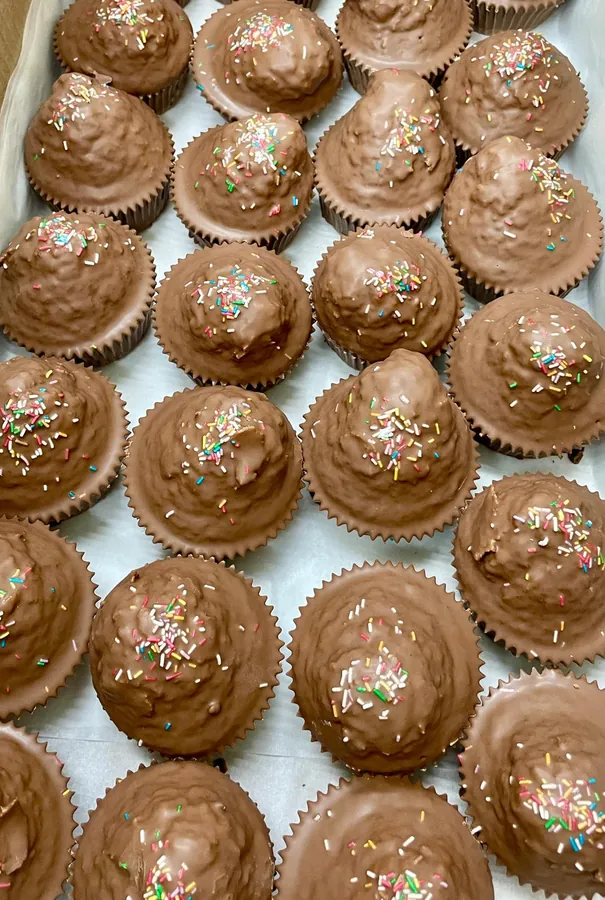
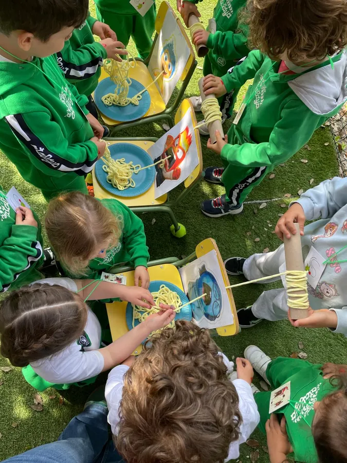
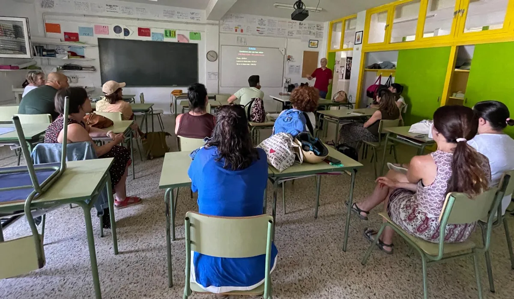

La junta actual echó a andar en noviembre de 2025. Este es el resumen
de lo que salió adelante en ese primer curso: ocho actividades, cuatro
de ellas con entidades de fuera del colegio, y tres formaciones
gratuitas para las familias.
Actividades8 en el cursoDe diciembre de 2025 a junio de 2026
Alumnado58 participantesEn el concurso de postales, de todas las etapas
Colaboraciones5 entidadesCruz Roja, el Observatorio de Cantabria, Ocio de Colores, Librería Gil y Residencia Isasti
Formación3 talleresAtragantamientos, primeros auxilios y eclipse solar. Todos gratis
01
AlumnadoDiciembre 2025
1.er Concurso de Postales Navideñas
La primera actividad de la nueva junta, y también su carta de
presentación. El alumnado que quiso participar presentó una postal
en tamaño A5 sobre «lo mejor de la Navidad».
Participaron 58 alumnos y alumnas de todas las etapas
educativas, desde infantil hasta secundaria, en un plazo
de apenas dos semanas. Los premios fueron nueve vales para gastar
en la Librería Gil, que los donó.
La parte que más gustó no estaba en las bases: se propuso que quien
quisiera podía donar su postal a la Residencia Isasti,
en Lanestosa, para trabajar con ellas con las personas que viven
allí. La mayoría de los participantes decidió donarla.
Qué aprendimos
La información no llegó a secundaria. El cartel
estaba en la corchera de la entrada, por donde ese alumnado no
pasa. En las próximas convocatorias la información irá también
en el primer piso.
Las bases no se leyeron. Hace falta contenido
más visual y más breve, y no un texto largo.
El buzón costó de encontrar. Hay que señalizar
mejor dónde se entregan las participaciones.
Quedaron dudas sobre protección de datos. Un
concurso con menores obliga a tener claro de antemano qué datos
se piden, para qué y hasta cuándo se guardan.
02
FamiliasFebrero 2026
Merienda del Carnaval
La actividad más grande del curso y la que más manos necesitó.
52 personas participaron en su organización, desde
decidir el tipo de merienda hasta montar las mesas el mismo día.
Se planteó con un cambio de enfoque respecto a años anteriores:
una merienda más acorde con la línea de alimentación
saludable del centro y con atención a las alergias e
intolerancias.
Las familias de infantil fueron especialmente activas: disfraces en
grupo, repostería casera hecha en casa y ayuda en la preparación.
Es el mejor ejemplo de lo que puede hacer la asociación cuando
muchas familias empujan a la vez.

Parte de las 300 magdalenas de obrador de la merienda de Carnaval.
Sustituyeron a los conos de golosinas de años anteriores, después de
consultarlo con las familias.
Qué aprendimos
Hay que rotar los equipos. Quien organiza no
disfruta de la fiesta, y es una celebración por y para todo el
alumnado del colegio. Turnarse permite que todas las familias
puedan estar en ella.
Faltó bebida. Para las próximas ediciones hay
que prever más agua y más zumo. La leche, si se compra, sólo
para las clases de infantil.
Sobró merienda sin alérgenos. Conviene preparar
bastante menos cantidad de la que se hizo este año.
Falta un plan B para la lluvia. Hace falta un
espacio alternativo cubierto con capacidad para todas las
familias.
Los talleres de disfraces, con más antelación.
Y abiertos a toda la familia, no sólo al alumnado.
Los cursos superiores apenas participaron. Es
el mismo problema que en el concurso de postales: llegar a las
etapas mayores sigue siendo la asignatura pendiente.
03
FormaciónAbril 2026
Charla sobre alimentación y atragantamientos (0–5 años)
La charla la impartió Lara del Valle, matrona en
Cantabria y consultora internacional de lactancia (IBCLC), que la
ofreció de forma totalmente gratuita. Estaba
dirigida a familias con niños y niñas de 0 a 5 años.
Se inscribieron 17 familias, sobre todo de la etapa
de infantil, y asistió también personal del equipo educativo y del
comedor. Las familias participaron activamente preguntando y
compartiendo experiencias.
Funcionó lo suficientemente bien como para querer repetirla:
está previsto volver a organizarla en próximos
cursos.
Qué aprendimos
Los correos acabaron en spam. Familias que ya
se habían inscrito no vieron el recordatorio con la fecha. Esta
web nace en buena parte por esto: para que haya un sitio donde
consultar la información sin depender del correo.
El interés está en los cursos inferiores. Ahí
es donde tiene más sentido la charla, y merece la pena repetirla
en años siguientes para las familias que vayan llegando a
infantil.
Conviene explicar mejor a quién va dirigida.
Hubo dudas sobre la utilidad de una charla tan específica.
Cuando se anuncia una formación hay que decir con claridad a qué
etapa se dirige y qué se lleva quien asiste.
04
Familias28 de abril de 2026
Merienda literaria en Infantil
Un encuentro alrededor de los libros en la etapa de infantil, para
juntar la lectura con el rato de merienda. Participaron las clases
del Conejo, el Caracol y el Pájaro.
Doce familias se implicaron en la preparación.
Costó cero euros: las familias aportaron los
alimentos y su tiempo. Se difundió por WhatsApp, correo y boca a
boca.
El acta de la asamblea la resume como «muy divertida y
participativa», y es el ejemplo más claro de que no todo necesita
presupuesto.

La merienda literaria en el patio de infantil. La foto está tomada
desde arriba y no se reconoce a ningún menor.
05
26 de abril de 2026
Colaboración en las Jornadas Culturales
Esta no la organizó la AFA: la organizó el colegio y la asociación
colaboró económicamente, con
110,50 € destinados a los conciertos de la Semana
Cultural. Participó todo el alumnado del centro.
Aparece en esta lista porque es una de las cosas que se hacen con
la cuota y que no se ven: la AFA también pone dinero en
actividades del colegio cuando la asamblea lo aprueba.
06
Formación29 de abril de 2026
Taller de Primeros Auxilios y RCP
Lo impartió Juan Fernando Bermejo, de Cruz Roja de
Santander, en el propio colegio y
de forma gratuita.
Se abrió con un aforo de 35 plazas, asignadas por orden de
inscripción y con un participante por familia para que llegara al
mayor número posible; también podía apuntarse el alumnado de la
ESO. Participaron 27 familias.
De todas las actividades del curso, probablemente sea la de mayor
utilidad práctica: saber reaccionar ante una emergencia sirve
dentro y fuera del colegio.
El taller de primeros auxilios y RCP, con Cruz Roja de Santander.
Practicando la reanimación y la maniobra de desatragantamiento.
07
Formación27 de mayo de 2026
Charla sobre el eclipse solar
La impartió el Observatorio de Astronomía de
Cantabria, gratis, dentro de su labor divulgativa. Una
charla para entender qué se iba a ver y cómo mirarlo sin dañarse la
vista.
Aquí hay un dato que conviene mirar de frente:
se inscribieron 29 familias y asistieron 14.
La mitad. Es la brecha más grande del curso entre lo que la gente
dice que va a hacer y lo que hace.

La charla sobre el eclipse solar, impartida por el Observatorio de
Astronomía de Cantabria.
Qué aprendimos
Inscribirse sale gratis, y eso tiene un coste.
Cuando apuntarse no compromete a nada, la mitad no aparece. En
actividades con aforo limitado eso significa dejar fuera a
familias que sí habrían ido. Merece la pena mandar un
recordatorio el día antes y pedir que quien no pueda venir avise.
08
Alumnado1 al 19 de junio de 2026
Ludoteca de las tardes no lectivas
La actividad más ambiciosa del curso y la única con coste para las
familias. Un servicio de ludoteca de 15:00 a 17:00 h
durante las tardes no lectivas de junio, en el colegio, impartido
por la empresa Ocio de Colores con tres monitores.
Se inscribieron 31 alumnos.
Estuvo abierta a todas las familias, asociadas o no, con dos
precios: 35 € para las asociadas y 55 € para las que no lo
eran. Esos 20 € de diferencia son, en la práctica, la
mejor explicación de para qué sirve la cuota de 18 €.
Costó 1.625 €. Las inscripciones cubrieron 1.265 € y
la asociación aportó los 360 € restantes de su
fondo para que el precio bajara.
Qué aprendimos
El modelo funciona y se puede repetir. Un
servicio que las familias necesitan, contratado a una empresa,
pagado casi entero por quien lo usa y con la asociación
cubriendo solo la diferencia. La valoración de la asamblea fue
positiva y ya se está preparando la edición de septiembre.
Hay que medir la demanda antes de contratar. Es
lo que se está haciendo con la de septiembre: primero preguntar
a las familias, después cerrar con la empresa.
Tres conclusiones que se repiten
Cada actividad se documenta en una memoria, y una parte de esa
memoria son las dificultades. Leídas todas seguidas, hay tres cosas
que aparecen una y otra vez:
La información no llega a todo el mundo. Ni al
alumnado de secundaria, ni a las familias cuyo correo acaba en
spam. Esta web nace precisamente para eso: un sitio estable donde
consultar qué hay, cuándo y cómo apuntarse.
Las etapas mayores participan mucho menos. Pasó
en el concurso y pasó en el Carnaval. Es el reto de este curso.
Organizar no puede recaer siempre en los mismos.
De ahí las comisiones de trabajo: reparten la carga y permiten que
quien organiza también disfrute de la actividad.
El plan para este curso tiene en cuenta las tres cosas.
Esto es lo que hacemos con tu cuota
Cinco actividades en un curso, dos de ellas con entidades de fuera del colegio.